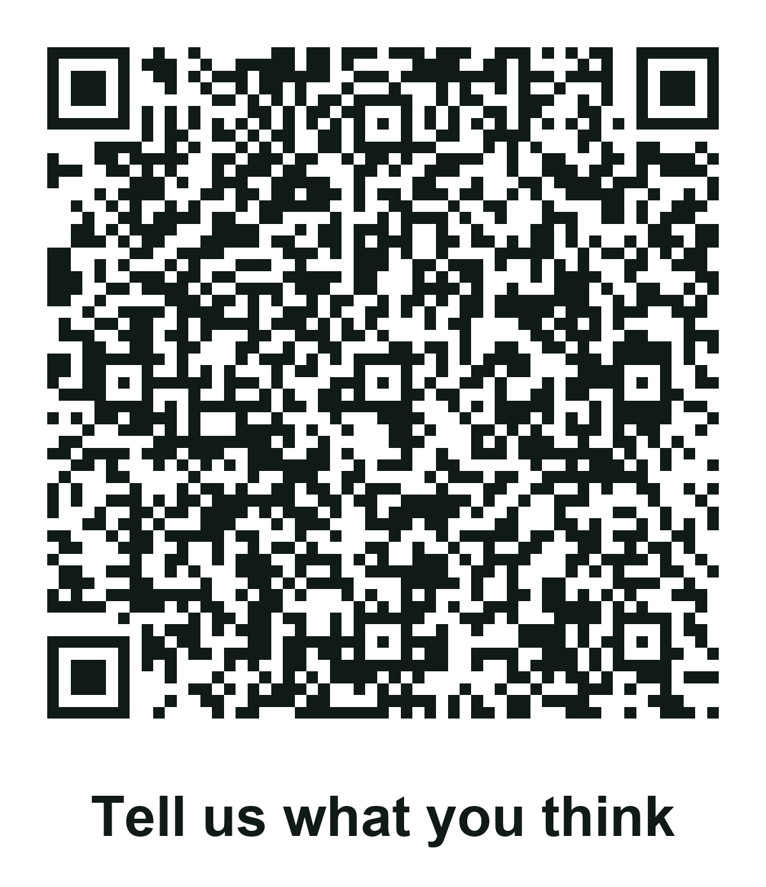

Summary: The plan for taking the lacewing project to a real public audience — station setup, the two QR codes, the ten-question survey, and what the data is for. This is where the play's missing survey number comes from.
Sources: wiki/lacewing-play.md (Scene 7's evidence blank); raw/bioglow/fll-future-3-8-judging-rubric.pdf; team plan, 4 October 2026
Last updated: 2026-10-05
Target date: Sunday 8 November. See calendar. This is the one milestone that produces a number nobody can invent.
The Innovation Project claims to teach people about beneficial insects. Right now that is a claim with no evidence behind it.
Scene 7 of lacewing play has a blank in it:
"We tested our learning activity with [NUMBER] kids. Before, [__%] could identify a green lacewing. After, [__%] could identify it and explain why beneficial insects matter."
The script's own instruction is "only use real survey results." This event is how that blank gets filled — and it is the only one of the six evidence blanks with no candidate answer anywhere in the wiki.
It also feeds two rubric rows directly: Implement ("real-world users and impact identified") and Communicate. See judging and awards.
Set up station outside the venue
↓
Kid greets a shopper — "can we tell you about a bug?"
↓
2-minute explanation, with the observation box on the table
↓
QR code 1 → short video
↓
QR code 2 → 10-question survey
↓
Thank them. Reset. Next person.
Keep each interaction under three minutes. People are on their way somewhere. A short, confident explanation that ends with a thank-you gets far more completed surveys than a long one that traps someone.
| Venue permission | ⚠️ Required first. Vons, the library, a farmers' market — all need a manager's yes before a table appears outside. Ask in person, mention FIRST LEGO League and a school team, offer a date and a two-hour window |
| Who asks | An adult. This is the one part the kids do not do |
| What to bring | Something in writing — the team number (300024) and a coach's phone number |
A library is usually the easiest yes, a grocery store the most valuable audience, a farmers' market the most on-theme. Worth asking all three; one will say yes.
| Item | Note |
|---|---|
| Table and two chairs | Kids stand, adults sit back and let them work |
| The trifold board | The real one. This doubles as a dress rehearsal for it |
| The observation box | Live larvae if they survive to November; otherwise photos. A live insect is the single biggest draw |
| Two QR codes | Printed large, on stiff card, clearly labelled — "Watch the video" and "Tell us what you think" |
| Paper survey backup | Perhaps a third of people will not scan anything. Clipboard and pens |
| A tablet or phone on a stand | So someone can take the survey without using their own phone |
| Team shirts | Identifies the kids as a team rather than children approaching strangers |
Two adults minimum, always within sight. Kids do the talking; adults never approach anyone and never take the survey for them.
QR 1 — the video. A short clip: the life cycle, or larvae eating aphids. Under 60 seconds. Point it at a YouTube unlisted link, not a file.
QR 2 — the survey. The Google Form below.
The Bug Nobody Knows — 1 minute survey — live, public, anonymous, no sign-in required.
QR code, ready to print: docs/assets/qr/qr-survey.png

⚠️ Two things to check on the form.
1. Question 3 looks missing. The design had ten questions; the live form reads as nine. The absent one is "BEFORE today, could you tell a helpful insect from a pest?" — the one that measures the project's actual problem statement. Q2 and Q4 still give the lacewing before/after, so Scene 7 is safe either way, but without Q3 there is no measurement of "people cannot tell good bugs from bad" — the claim the whole project rests on. Worth adding before 8 November.
2. Get the short link. In the form: Send → link icon → tick "Shorten URL". That produces a
forms.gle/…address about a quarter the length, which makes a far less dense QR code that scans from much further away. Then regenerate with--out surveyand the card is replaced.
There is a script in the repo. Run it once per code, with the URL and the label that should print underneath:
python3 scripts/make_qr.py "https://forms.gle/xxxx" "Tell us what you think" --out survey
python3 scripts/make_qr.py "https://youtu.be/xxxx" "Watch the video" --out video
It writes print-ready PNGs into docs/assets/qr/ at 300 dpi, sized for printing at about 10 cm square with the label beneath — so nobody has to guess which code is which.
First time only: python3 -m pip install --user segno pillow
Three things the script handles that a web generator usually does not:
Use the shortened form link from the Apps Script log. A shorter URL means fewer modules, bigger squares, and a scan that works from further away.
Test every code by scanning it from across the table before leaving the house. A code that only works at 10 cm is a code that will not get used.
BUILD THE SURVEY — paste this into script.google.com
That doc holds an Apps Script that creates the whole form, all ten questions, and a linked Google Sheet in one run. Paste it at script.google.com, press Run, approve the permission prompt, and the execution log prints three links: the short form URL for the QR code, the edit URL, and the spreadsheet.
Every response lands in the sheet as a timestamped row. Nothing to export, nothing to copy.
Google will warn that the script is "unsafe" — that warning appears for every personal Apps Script. It is your own script, in your own account, touching only files it creates.
Question-by-question reference, if you would rather build it by hand: Survey Questions
| # | Question | Type | What it is for |
|---|---|---|---|
| 1 | Are you a kid, teen or adult? | Choice | Scene 7 needs the number of kids. Without this the figure cannot be reported honestly |
| 2 | Before today, had you heard of a green lacewing? | Choice | The "before" number |
| 3 | Before today, could you tell a helpful insect from a pest? | Choice | The problem statement, measured |
| 4 | Now, could you point one out? | Choice | The "after" number. Pairs with Q2 |
| 5 | Name one thing a lacewing larva eats. | Short answer | ⭐ The strongest question on the form |
| 6 | Now, could you explain why beneficial insects matter? | Choice | Scene 7's exact wording |
| 7 | Was the information clear? | 1–5 scale | Presentation quality |
| 8 | Did the team answer your questions well? | Choice | Q&A practice, measured |
| 9 | Will you do anything differently in your garden? | Choice | Real-world impact |
| 10 | What is one thing we could explain better? | Paragraph | Feedback to act on |
Questions 2, 4 and 6 are self-reported — people say they learned something because they are being polite to a nine-year-old. Question 5 asks them to actually produce a fact.
"Eleven of fifteen people could name something a lacewing eats after a two-minute conversation"
That sentence is worth more to a judge than any number of people claiming they understood. It is the difference between we talked at people and people learned something.
No names, no emails, no phone numbers, no photographs of strangers. Turn off email collection in the Form's settings. Children are running this and the respondents are members of the public; the survey has no reason to identify anyone, so it should not.
| Scene 7 blank | How to fill it |
|---|---|
| [NUMBER] kids | Count of Q1 = Kid |
| Before [__%] | Q2 "Yes, I knew what it was" ÷ total |
| After [__%] | Answered Q4 Yes and Q6 Yes ÷ total |
Use the real numbers even if they are small. Twelve people is twelve people. A judge who hears "we surveyed 12 shoppers" believes it; one who hears "over 100" from a five-person team on a Sunday afternoon does not.